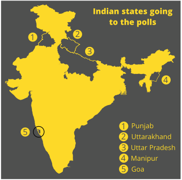

MAKING SENSE OF INDIA'S STATE ELECTIONS
Five states in India will be holding elections for their legislatures in February and March this year. These include India's most populous state, Uttar Pradesh.
For an overview of how India's political parties have done in previous state elections, tap below.